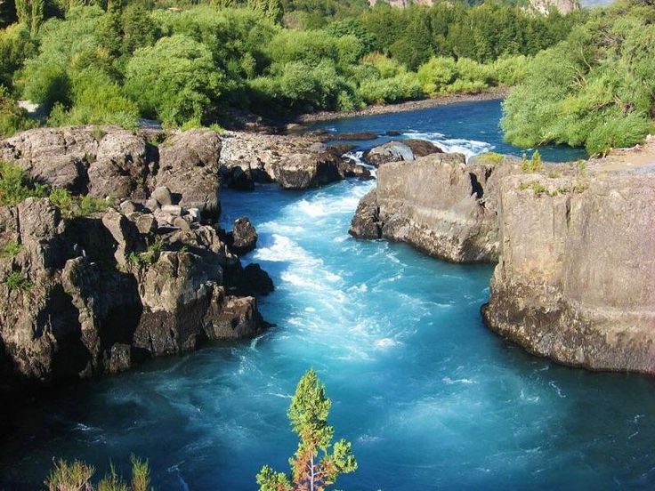

ADVENTURE
Conquer Peaks, Rivers, and the Wild Patagonia.
Conquer Peaks, Rivers, and the Wild Patagonia.

Location: Patagonia
Torres del Paine National Park, located in Chilean Patagonia, is a UNESCO Biosphere Reserve celebrated for its breathtaking landscapes of jagged granite towers, shimmering turquoise lakes, sprawling glaciers, and vast grasslands teeming with wildlife such as guanacos, condors, and pumas. This remote wilderness offers world-class trekking routes like the W and O Circuits, drawing adventurers from around the globe to experience its dramatic scenery and pristine ecosystems, making it one of the most iconic and awe-inspiring destinations in South America.

Location: The Lake District
PUCÓN is Chile’s adventure playground, nestled in the Lake District on the shores of Lake Villarrica and at the foot of the snow-capped Villarrica Volcano. This lively town offers year-round thrills, from hiking volcanic trails, skiing, and rafting to kayaking and canyoning in pristine rivers. For those seeking relaxation, nearby hot springs and tranquil lakes provide a soothing escape, while the rich Mapuche culture adds depth through local cuisine and traditions. With its perfect blend of adrenaline and serenity, PUCÓN is a must-visit destination that captures the spirit of southern Chile.

Location: Northern Patagonia
Futaleufú River, flowing through the remote landscapes of northern Patagonia, is one of the world’s premier whitewater destinations. Famous for its turquoise waters and powerful rapids, it attracts adventurers from across the globe for rafting, kayaking, and fly-fishing. Surrounded by snow-capped peaks, lush forests, and pristine valleys, the river offers not only adrenaline-pumping thrills but also breathtaking scenery and tranquility. With its blend of natural beauty and exhilarating experiences, Futaleufú River is a jewel of Chilean Patagonia that promises unforgettable adventures.
From the soaring granite towers of Patagonia to the fiery volcanoes of the Lake District, Chile is a land built for adventure. Trek through dramatic landscapes, paddle down rushing rivers, or climb into the heights of the Andes — every corner of the country offers a new challenge and a breathtaking reward. With its extreme geography and unmatched natural beauty, Chile is the ultimate playground for explorers.